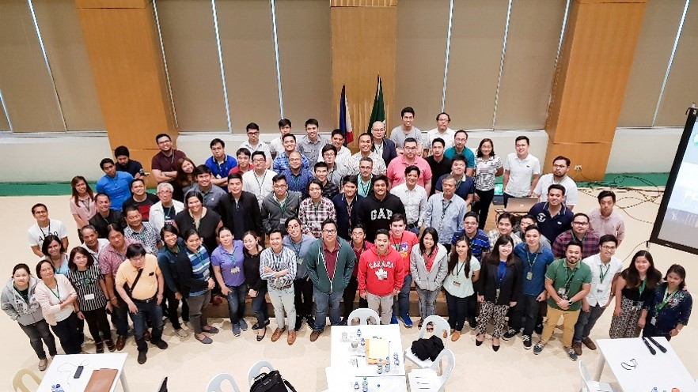

Continuing Professional Development (CPD) Provider
Signed July 12, 2017, The Department of Electronics and Computer Engineering of De La Salle University was granted by the Professional
Regulation Commission (PRC) the status of Local Continuing Professional Development Provider with Accreditation No.
2017-017.
Pursuant to the Resolution No. 2016-990 that requires registered and licensed professionals to earn units that enrich their
profession, known as the Revised Guidelines on the Continuing Professional Development (CPD) program.

| Date |
Name of Seminar |
No. of Participants |
CPD Units |
| Feb. 22, 2020 |
CPD Lecture Series 2020: Modifying Earthquake Response Of Structures Using Anti Seismic Devices (MODES CPD) |
72 |
3 |
| Oct. 25, 2019 |
CPD Seminar on Engineering Our Heritage Structures (EnHeriT2019) |
40 |
3 |
| Oct. 19, 2019 |
CPD Seminar on Ground Improvement Techniques, Exploration, Characterization, and Hazards (GTECH)
with the theme of Advanced Ground Improvement Techniques |
45 |
4 |
| Sept. 14, 2019 |
CPD Seminar on Utilization of Waste Materials |
33 |
7 |
| Oct. 25, 2019 |
CPD Seminar on Engineering Our Heritage Structures (EnHeriT2019) |
40 |
3 |
| Aug. 10 & 17, 2019 |
CPD Seminar on Advanced Tools on Transport Planning and Modeling |
34 |
12 |
| June 3, 2019 |
CPD Seminar/Workshop on Structural Earthquake Response Analysis (STERA 3D) |
20 |
6 |
| April 29-30, 2019 |
CPD Seminar/Workshop for Civil Engineers on Structural Mitigation & Increasing Resilience of Schools to Multi-Hazard |
63 |
9 |
| March 2, 2019 |
Construction Technology and Management |
134 |
6 |
| Sept. 29, 2018 |
CPD Seminar/Workshop on Challenges to Civil Engineers on Infrastructure Resilience |
70 |
6 |
| Sept. 13, 2018 |
CPD Lecture Series on Seminar Workshop on the Utilization of Waste Materials |
100 |
7 |
| June 22-23, 2018 |
CPD Seminar/Workshop for Civil Engineering on Urban Engineering |
100 |
12 |